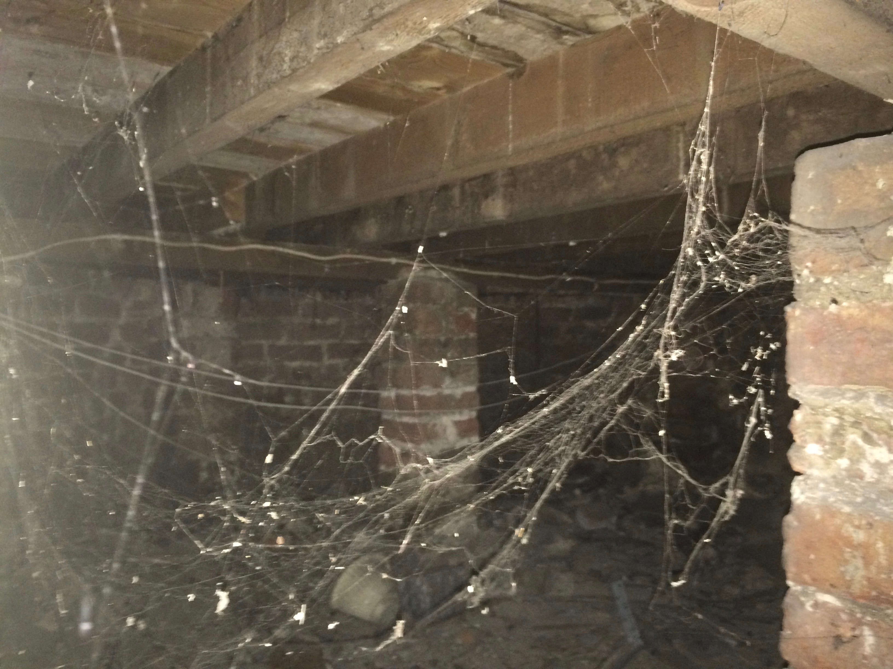
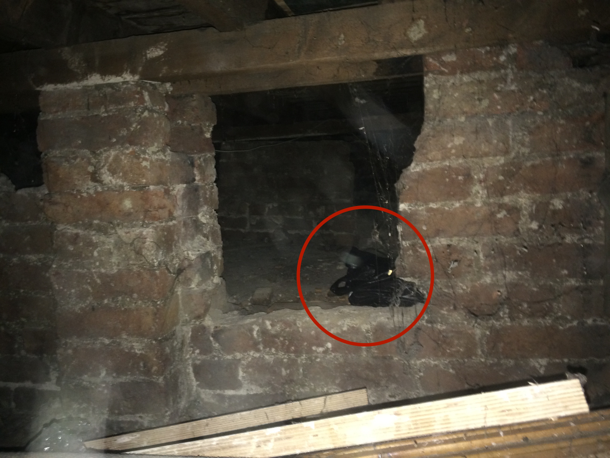
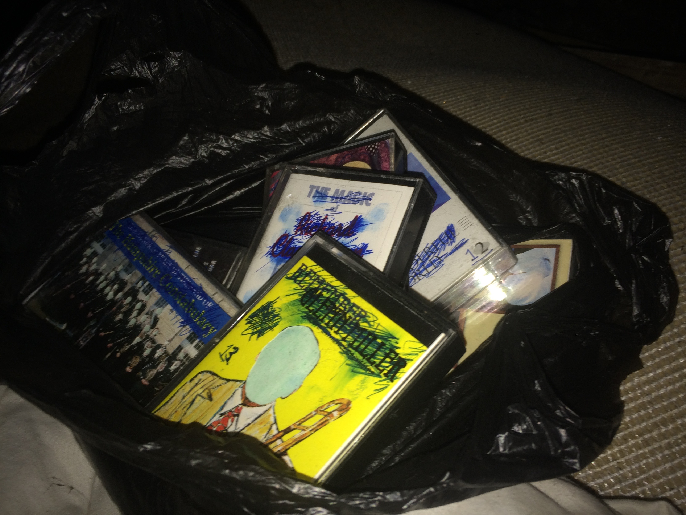

When I moved in I spent the first few days deep cleaning everything and found some quite unusual things - the skeleton of a dead mouse, notebooks filled with odd and seemingly incoherent ramblings, a box full of shards of broken glass. But I cleaned this all up, called pest control, and the house was on the way up. The next task was the basement - a relatively large space with mountains of clutter and old belongings. It took a whole just to clean out enough rubbish to be able to access the main space.
The things in the basement were largely things you’d expect to find - boxes of Christmas decorations, bags full of old clothes, broken electronics, old mattresses. However something that unsettled me was seeing a boarded up area which seems like it hasn’t been accessed for a really long time. I broke through the cover which opened up into a large crawl space. Shining my torch into the area I couldn’t see anything in there but curiosity got the better of me and I decided to go inside of it.


The atmosphere inside the crawl space was very sinister as I’m sure you can imagine but I couldn’t see much inside. That is, until I found a black plastic bag hidden near the back. There wasn’t space to look inside from within the crawl space but I managed to drag it out and bring it into the main area of the basement. Inside the box was a bunch of old cassette tapes.
The covers looked kind of normal at first but in each the faces of people pictured had been cut out, and each tape was numbered. At this point I started to feel really creeped out. Why were the tapes hidden in such an odd place? Why have the covers been altered in this way? I don’t have a cassette player and been able to listen the recordings, but I am going to order one and will update this thread and let you know what’s on them."
